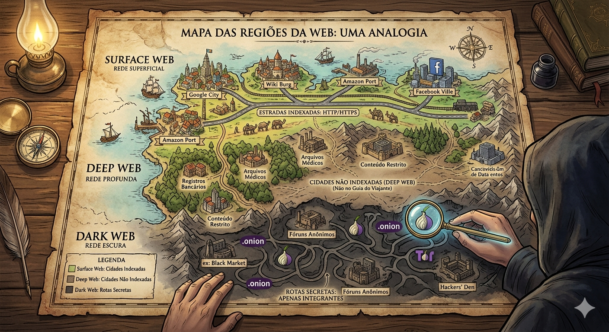
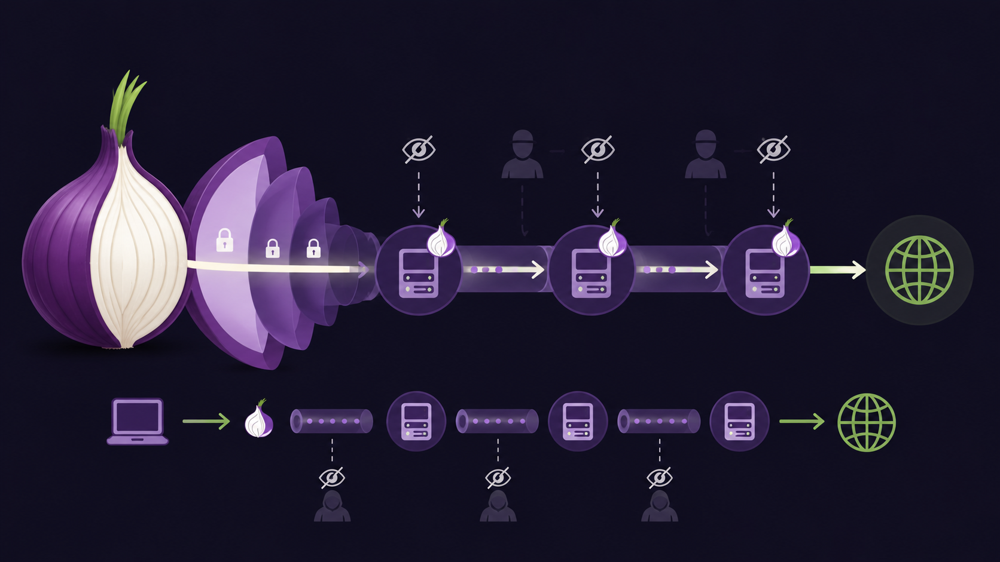
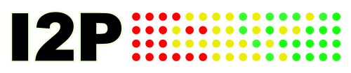
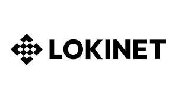

Com a evolução da tecnologia e da comunicação, recursos foram criados para facilitar a troca de informações entre pessoas e, com o tempo, isso foi se globalizando. Hoje, existe a internet, que provê diversos tipos de serviços e é um dos principais (se não o principal) meios de compartilhamento no mundo atual. Dentre esses serviços, temos a WWW (World Wide Web), DNS, e-mail, entre outros.
Entretanto, assim como um iceberg, a internet acessada facilmente pelos usuários do mundo todo não é, por completo, toda a rede de ligação entre os sistemas. Fazendo uma analogia, imagine que a internet é uma grande região.
Um mapa da região conterá cidades e as estradas que as ligam, e todos que tiverem esse guia conseguirão transitar facilmente pela região (chamamos, em redes, de parte indexada da Web). Entretanto, podem existir cidades que foram criadas após a confecção do mapa, ou que simplesmente não foram registradas e, por isso, não conseguem ser acessadas apenas olhando para o mapa (na realidade da internet, consideramos essas como a porção não indexada).
Além disso, suponhamos também que existam rotas secretas, às quais apenas integrantes de um grupo específico têm acesso, a como chegar nas cidades por caminhos desconhecidos. Mais tecnicamente, podemos dividir a Web em três principais grupos:
A Surface Web (ou superfície da Web) é basicamente toda a região registrada no mapa, ou seja, indexada na Web. Utilizando browsers (navegadores), qualquer usuário pode chegar ao destino desejado, sem precisar usar ferramentas ou autenticações específicas. Exemplos de uso da Surface Web são o acesso ao Google e ao YouTube, pois crawlers (motores de busca) rastreiam e catalogam essas páginas, fazendo com que elas possam ser encontradas.
A Deep Web (ou Web profunda) é a analogia das cidades e rotas que não estão presentes no mapa e não podem ser acessadas apenas com ele como ferramenta, ou seja, são não indexadas. Ainda que não seja possível acessar essas áreas da Web sem autenticação ou ferramentas específicas, elas não são anônimas (pois para acessá-las, o usuário precisa se identificar). A maioria das informações da internet está concentrada na Deep Web, em geral, pois é onde ficam os dados que não são de acesso público, como conteúdos protegidos por senha, formulários privados, documentos médicos, documentos legais, etc. Um exemplo de uma página da Deep Web são os emails: quando um email é enviado, ele existe na Web, mas não é possível pesquisar algo num navegador para encontrá-lo, você precisa estar conectado numa conta específica para acessá-lo.
A Dark Web (ou Web obscura) é a parte da analogia que fala sobre as rotas secretas. As páginas da Dark Web também não possuem indexação, mas, além disso, procuram anonimato o máximo possível. Para isso, usam de ferramentas específicas (como o Tor, que explicaremos melhor adiante) para acessar páginas. Exemplos de uso da Dark Web são para whistleblowers (pessoas internas a uma instituição que fazem denúncias anônimas), marketplaces de produtos ilegais (drogas, contrabando, etc) e ambiente de troca entre hackers (que compartilham hacks, exploits, malwares, credenciais roubadas, entre outros). Acessar a Dark Web requer muito cuidado, pois pode expor a máquina a malwares e compartilhar sem permissão informações pessoais do usuário.

Imagens geradas por IAA rede Tor, ou The Onion Router, é um protocolo open source (de código aberto), lançado em 2002 e criado pela marinha americana, originalmente com o objetivo de ser uma forma descentralizada e anônima de navegar pela internet, sem que fosse possível rastrear o caminho percorrido de uma máquina a outra durante uma sessão. Explicaremos, a seguir, o funcionamento do Tor:
A rede Tor tem como base para seu funcionamento um grupo de usuários voluntários que oferecem seus sistemas para servirem como nós dessa rede. Assim, os nós do Tor se dividem em:
Para acessar a Dark Web, o usuário precisa instalar um software Tor (um navegador). Esse browser conecta automaticamente a máquina a um diretório, que conhece o endereço de diversos Nodes do Tor e suas chaves de criptografia. Então, ele aponta ao usuário para qual endereço ele deve seguir e cria uma sessão criptografada entre o navegador e o nó de entrada.
O usuário envia a esse endereço uma mensagem encriptografada com n chaves, como se fossem n camadas de segurança (por isso se associa às camadas das cebolas). O Entry node possui apenas 3 informações: a chave da camada mais externa de criptografia, o endereço de onde a mensagem veio e o endereço para onde ela deve ser enviada. Dessa forma, ela passará a um Middle Node, que contém a segunda chave de criptografia, e ambos os endereços de chegada e saída. Isso se repete por n nós, cada um quebrando uma camada de criptografia, até que, no Exit Node, o dado chegue “clear” (sem codificação do Tor) para o destino.
O retorno da mensagem é similar, entretanto, ao invés de quebrar a camada de criptografia, eles a criam, de forma que somente a máquina do usuário (que possui todas as n chaves), consegue resolver e obter a mensagem.
Dessa forma, caso uma sessão seja interceptada no meio do caminho, o invasor conseguirá apenas 3 informações: um endereço de onde a mensagem veio, um para onde ela foi e uma mensagem codificada. Não conseguindo assim, saber nem quem é o usuário, nem qual a mensagem está sendo enviada.
Para melhor segurança ao acessar a Dark Web, recomenda-se o uso de uma Sandbox (partição da máquina especialmente protegida para, caso o sistema seja infectado, o malware não consiga ultrapassar essa área), de VPN, de Firewalls e de outras ferramentas de segurança.

Imagens geradas por IAComo visto anteriormente, a rede Tor originalmente não era anônima de ponta-a-ponta, pois os Exit Nodes se conectam com o servidor sem qualquer tipo de criptografia. Tendo isso em mente, os Hidden Services foram desenvolvidos usando o próprio Tor.
Ao invés de se conectar diretamente com um Exit Node do caminho na rede Tor, o servidor se “esconde” por trás de outros nós e ambos usuário e servidor usam de conexões intermediárias e senhas para se conectarem, sem que se conheçam.
Para que um Hidden Service funcione, o servidor escolhe aleatoriamente n nós e lhes envia mensagens pedindo para que eles sejam seus Pontos de Introdução (PIs). Os nós continuam realizando normalmente seus papéis como Entry, Middle ou Exit Nodes, mas ficam cientes de que estarão conectados a um servidor (ainda que não o conheçam).
Ao se tornarem PIs, os nós criam uma Hidden Service Description, que inclui a chave pública do servidor, e os endereços IP de todos os PIs desse servidor. Essa descrição será postada em uma Distributed Hash Table, com o intuito de espalhar na rede Tor as informações de onde esse servidor se encontra. A senha para resolver essa Hash Table é o endereço .onion, que pode ser encontrado com buscadores específicos, em sites oficiais da organização na Surface Web ou em fóruns e comunidades.
Quando um usuário tenta acessar um Hidden Service, ele usa o endereço .onion para descobrir a Hidden Service Description do servidor e conhecer os endereços IP dos Pontos de Introdução. Um desses PIs é escolhido aleatoriamente para mediar a conexão entre o usuário e o servidor. Para isso, o cliente escolhe um nó da rede Tor de forma aleatória (random point - RP), que será usado como o ponto de encontro entre as pontas da conexão.
Então, através desse RP, o cliente envia uma one-time password para o Ponto de Introdução, que por sua vez a envia para o servidor, que pode escolher tentar a conexão ou não fazer nada. Caso o servidor decida se conectar, ele cria uma sessão com o RP, respondendo com a mesma one-time password (garantindo que apenas os dois estão na conversa). Após a confirmação, o RP continua fazendo parte da interação, mas apenas serve como “meio de comunicação”, sem conseguir ler as mensagens que estão sendo transmitidas por ele.
Dessa forma, um Hidden Service garante o anonimato ponta-a-ponta que um usuário da Dark Web possa querer, diferentemente do que acontece quando um servidor não se esconde na rede Tor. Protegendo, assim, tanto o usuário quanto o servidor.
Embora o Tor seja a rede mais conhecida e utilizada para acesso à Dark Web, ele não é o único. Existem outras redes com objetivos e funcionamentos distintos, cada uma com suas próprias características e casos de uso.
O I2P é uma rede descentralizada Point to Point (P2P), totalmente criptografada de ponta-a-ponta, projetada para oferecer anonimato e privacidade. Diferentemente do Tor, que frequentemente é usado para acessar a internet pública de forma anônima, o I2P funciona principalmente como uma darknet fechada — o tráfego permanece dentro da própria rede, usando “túneis virtuais” unidirecionais de entrada e saída. Dessa forma, observadores externos não conseguem visualizar o conteúdo, a origem ou o destino das mensagens. A rede suporta diversos serviços, como BitTorrent, e-mail e hospedagem de sites (chamados de eepsites).
A FreeNet, ou Hyphanet, é uma rede descentralizada, que foi projetada especificamente para garantir liberdade de expressão, anonimato e resistência à censura. Ela funciona como um proxy de cache criptografado e distribuído, no qual os usuários contribuem com parte de sua largura de banda e espaço em disco (chamado de data store) para armazenar pedaços de dados anonimamente. Assim como o I2P, não possui nós de saída para a internet pública. Um de seus maiores diferenciais é o modo darknet, que permite conexões exclusivas entre os usuários de confiança, tornando a rede extremamente difícil de ser detectada ou bloqueada.
A Lokinet é uma rede que também utiliza roteamento em cebola (Onion Routing), considerada por alguns usuários como uma alternativa mais eficiente que o Tor. Seu principal diferencial é funcionar como um roteador de rede completo (ao invés de se limitar a um navegador, ela roteia toda a conexão de internet da máquina, permitindo o uso de diversos protocolos além do HTTP). Sua infraestrutura é composta por cerca de 1.700 nós, mantidos por colaboradores que são incentivados por criptomoeda, e é a base do aplicativo de mensagens Session. Além disso, os sites dessa rede usam o endereço .loki e as comunicações ocorrem sem endereços IP, protegendo os usuários contra vigilância e ataques de temporização.


Após esse estudo sobre a complexidade e profundidade da Web, percebe-se que a parte acessada pela maioria dos usuários de Internet no mundo é apenas uma pequena porção da sua verdadeira dimensão. Além disso, notou-se que não necessariamente algo é perigoso por não estar na Surface Web (pode apenas ser algo que necessita de privacidade, como documentos médicos, comunicações corporativas ou denúncias anônimas).
Entretanto, vimos também que existem na Web áreas que exigem muito cuidado, pois podem estar acompanhadas de malwares e usuários mal-intencionados. Partes da Dark Web são utilizadas para atividades ilegais, compartilhamento de informações confidenciais roubadas e outros fins sérios. As próprias tecnologias estudadas, como os Hidden Services e as redes alternativas ao Tor, foram projetadas justamente para dificultar o rastreamento dessas atividades. Logo, o acesso a essas áreas não deve ser feito de forma imprudente.
Por fim, uma comparação interessante de se fazer seria entre o que foi estudado e o Princípio da Incerteza de Heisenberg, que diz, na física quântica, que não é possível determinar simultaneamente com precisão a posição e a velocidade de uma partícula. Isso pode ter correlação com a Internet, pois, numa rede, quando se busca anonimato, o resultado é um atraso significativo no tempo de resposta entre as pontas da conexão. Entretanto, quando há necessidade de velocidade na rede, a privacidade é drasticamente reduzida.
Disciplina de Redes I